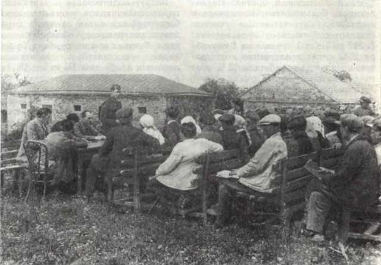
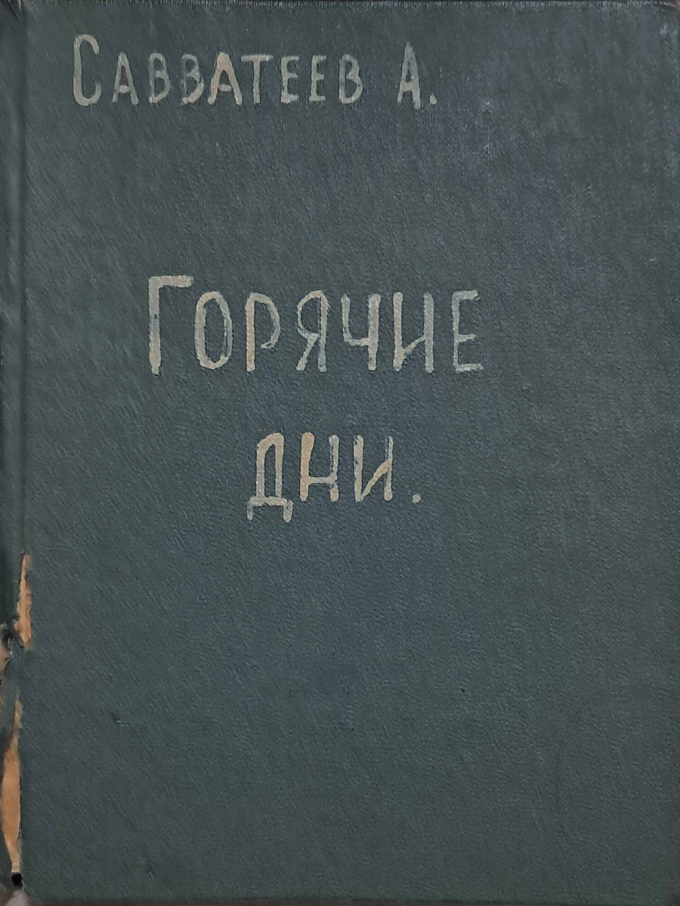
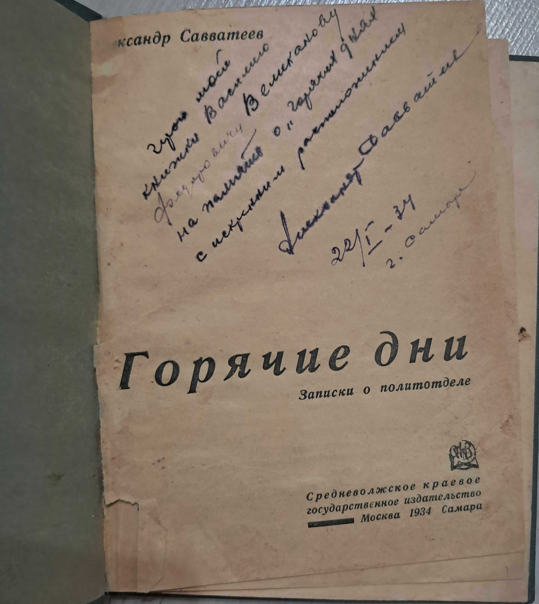
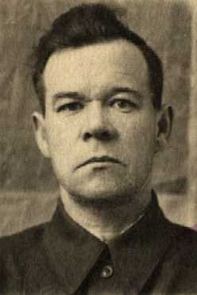

В первой половине 1930-х годов Машинно-тракторные станции (МТС) стали ключевыми узлами радикальной модернизации и коллективизации советской деревни во всём Советском союзе. Средневолжский край не стал исключением.Постановлением ЦК ВКП(б) от 11 января 1933 года при МТС были созданы чрезвычайные органы партийного контроля - политотделы.
Политотделы МТС выполняли функции жесткого государственного и идеологического регулирования. Они беспощадно боролись с саботажем хлебозаготовок, очищали колхозы от «антисоветских элементов», занимались организацией соцсоревнований и ковали новые лояльные кадры из местных трактористов и ударников. Кандабулакская МТС (территория современной Самарской области) являлась одним из передовых опорных пунктов этой внутренней битвы за хлеб, модернизацию и строение новой эпохи.


Перед вами не просто печатное издание, а уникальный свидетель «великого перелома». Книга Александра Савватеева «Горячие дни» создавалась как хроника жесточайшего противостояния в советской деревне периода коллективизации и борьбы за выполнение планов.
Главная ценность данного конкретного экземпляра сосредоточена на его форзаце. Размашистым почерком чернильной ручкой начертан подлинный инскрипт (дарственная надпись) автора. Александр Савватеев лично вручил эту книгу моему прадеду Василию, занимавшему пост заместителя начальника политотдела Кандабулакской МТС по партийно-массовой работе.

Именно этот экземпляр доказывает, что коллективизация проводилась реальными людьми, связанными крепкими узами личного доверия и общей идейной борьбы, проходившими через экстремальные условия Средневолжского края.

Василий Федорович являлся одним из тех, кто на стыке эпох создавал новую деревню, деревню нового советского человека. Работая в политотделе Кандабулакской МТС, он напрямую работал с крестьянами, решал проблемы, вскрывал саботаж на местах. Во время Великой Отечественной войны был политруком. Получил орден Красной Звезды. Именно такие люди поднимали солдатам боевой дух.